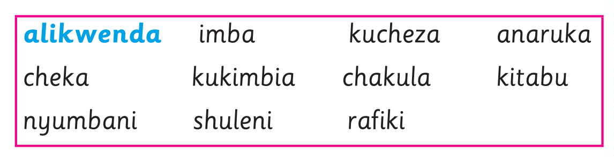

Andika sentensi kumi sahihi ukitumia maneno ya kisanduku; tumia eneo la kuandikia, kibodi au Breli.

2. Andika sentensi kumi sahihi kwa mwandiko wa chapa wenye vikonyo. Tumia maneno yaliyomo kwenye kisanduku hiki: alikwenda imba kucheza anaruka cheka kukimbia chakula kitabu nyumbani shuleni rafiki Mfano: alikwenda 3. Andika sentensi kumi sahihi kwa mwandiko wa chapa wenye vikonyo. Tumia maneno yaliyomo kwenye jedwali lifuatalo: Baba na mama Juma na Halima Wanafunzi wote walilima watasikiliza wanachota shamba la mahindi maji mtoni redio bustani ya mboga Mfano: Shangazi alikwenda mjini jana. Baba na mama walilima shamba la mahindi.
Andika sentensi kumi sahihi ukitumia maneno ya kisanduku; tumia eneo la kuandikia, kibodi au Breli.

Andika sentensi kumi sahihi ukitumia maneno ya jedwali; tumia eneo la kuandikia, kibodi au Breli.
Baba na mama · Juma na Halima · Wanafunzi wote / walilima · watasikiliza · wanachota / shamba la mahindi · maji mtoni · redio · bustani ya mboga